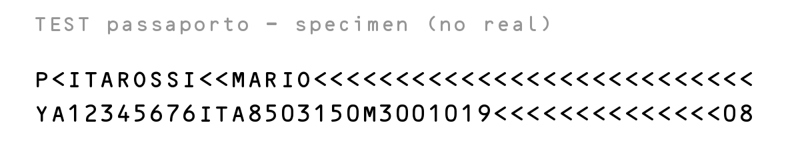
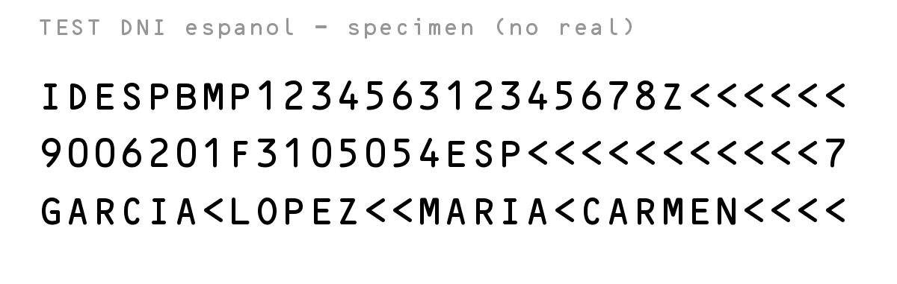
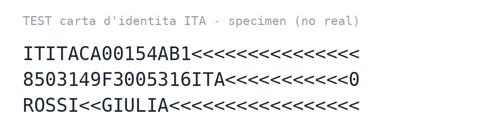
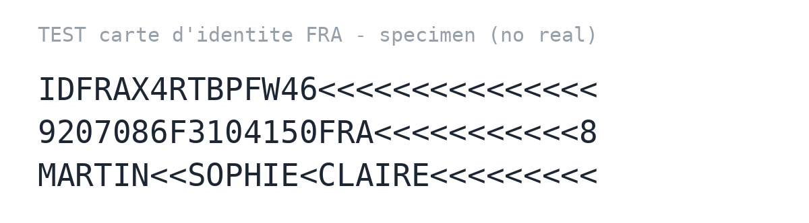
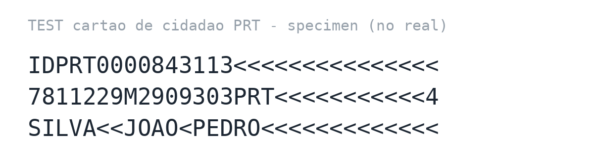
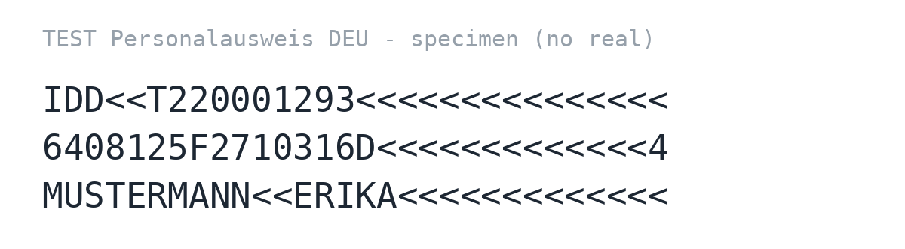
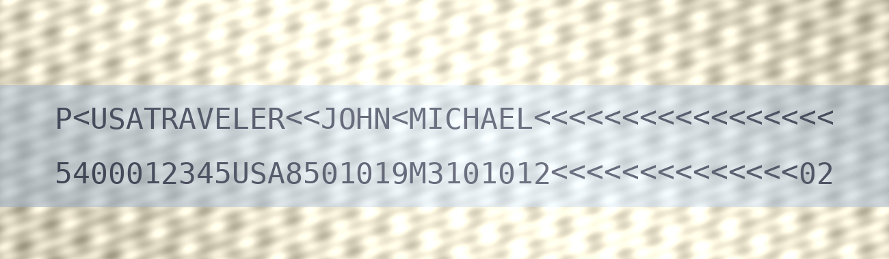

Documenti SPECIMEN inventati (nessuna persona reale), con check-digit validi.
Apri questa pagina sul PC e inquadra una delle immagini col telefono nello
scanner. Allinea le righe MRZ nel riquadro tratteggiato.
1) Passaporto (TD3) — atteso: ROSSI / MARIO · ITA · doc YA1234567

2) DNI spagnolo (TD1) — atteso: GARCIA / LOPEZ · MARIA CARMEN · DNI 12345678Z · soporte BMP123456

🇪🇺 Carte d'identità europee (TD1)
Stesso formato TD1 a 3 righe, check-digit ICAO 9303 validi. Ospiti UE diversi dallo spagnolo → l'app li tratta come documento «OTRO».
3) 🇮🇹 Carta d'identità ITA (TD1) — atteso: ROSSI / GIULIA · ITA · doc CA00154AB

4) 🇫🇷 Carte d'identité FRA (TD1) — atteso: MARTIN / SOPHIE CLAIRE · FRA · doc X4RTBPFW4

5) 🇵🇹 Cartão de Cidadão PRT (TD1) — atteso: SILVA / JOAO PEDRO · PRT · doc 000084311

6) 🇩🇪 Personalausweis DEU (TD1) — atteso: MUSTERMANN / ERIKA · D · doc T22000129

🛂 Caso difficile — passaporto USA (sfondo tinteggiato + riflesso)
SPECIMEN inventato (TD3, check-digit validi) che riproduce il documento problematico:
banda MRZ su fondo blu con trama di sicurezza e un riflesso lucido (tipico del
passaporto USA in policarbonato). Con la vecchia soglia globale la banda diventava un
blocco nero e non si leggeva; con la binarizzazione adattiva (Sauvola) si legge.
Serve da regressione per quel fix.
7) 🇺🇸 Passaporto USA «difficile» (TD3) — atteso: TRAVELER / JOHN MICHAEL · USA · doc 540001234 · nac. 01/01/1985 · scad. 01/01/2031

8) 🇪🇸 DNI spagnolo «difficile» (TD1, carta lucida) — atteso: GARCIA / LOPEZ · MARIA CARMEN · DNI 12345678Z · soporte BMP123456 · nac. 20/05/2003